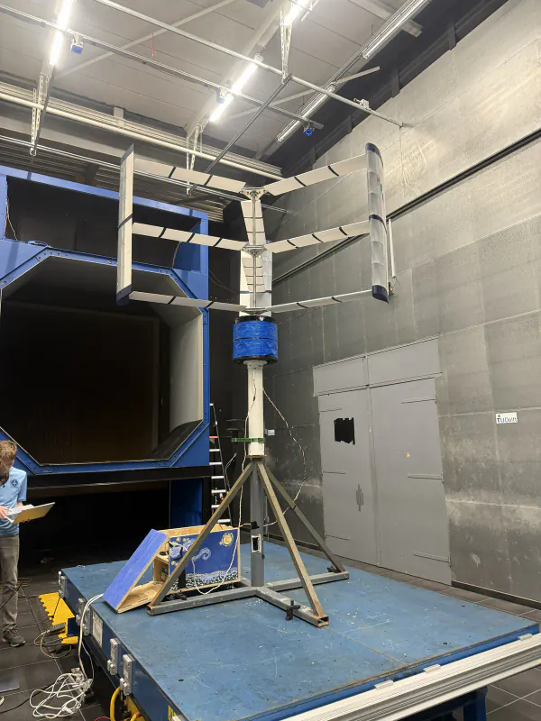
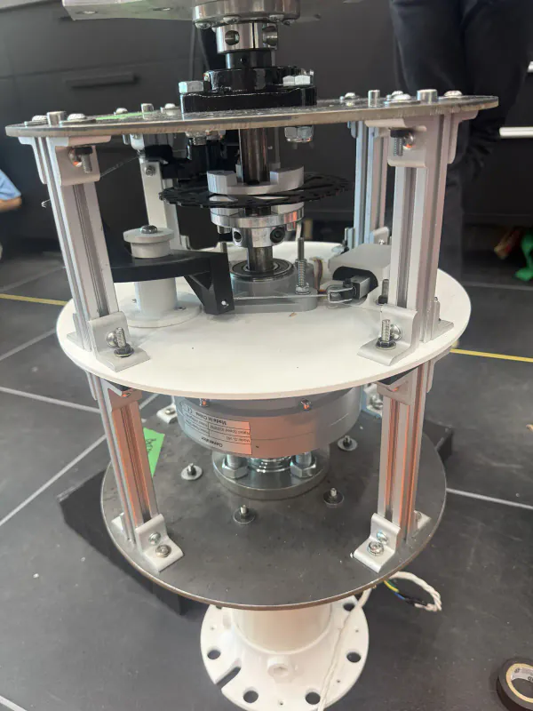
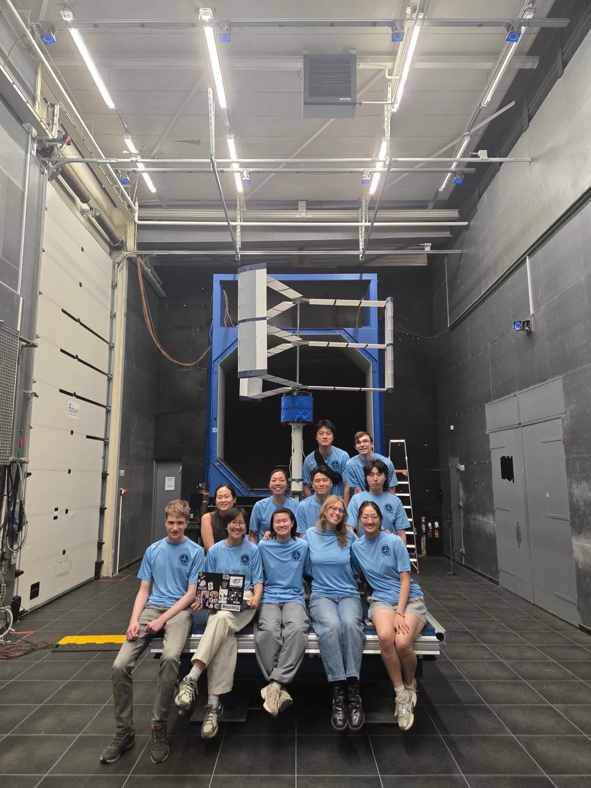
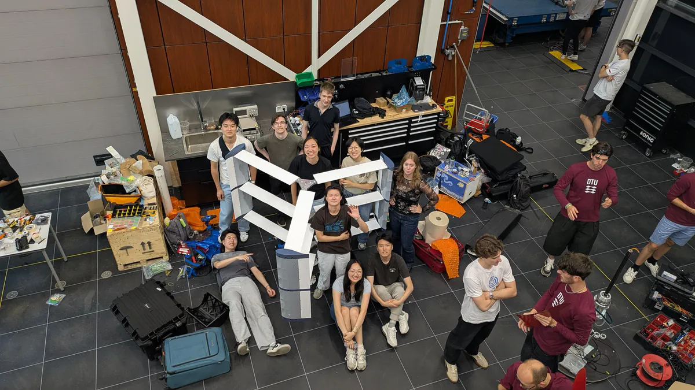
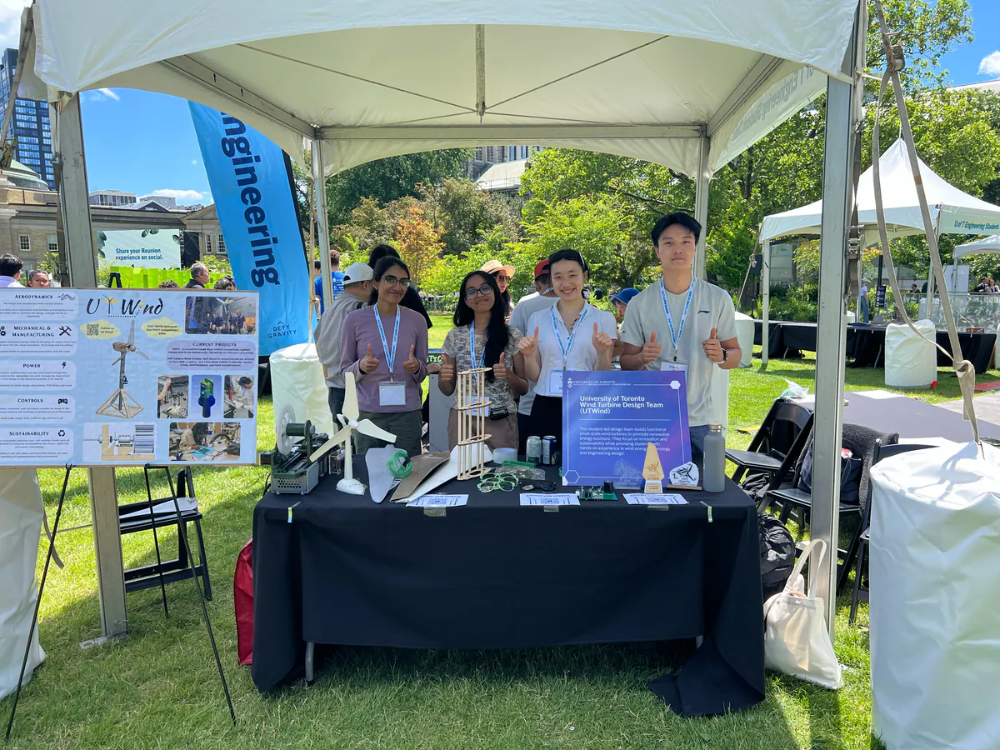

I love designing things that move, from wind turbines and robots to the business that gets them built.
Mechanical Engineering student at the University of Toronto, with minors in robotics, engineering business and advanced manufacturing.
Available for an internship or co-op from May to August 2027, and for a 12 to 16 month Professional Experience Year from May 2028.
Scroll and watch the turbine go up, one lift at a time.
Selected projects




The turbine, its hub, and our team at the 2026 International Small Wind Turbine Contest in the Netherlands.
Vertical-axis wind turbine
A six-foot turbine we designed, analysed, machined and assembled, then tested in the wind tunnel at Delft University of Technology. It started making usable power at 4 m/s.
University of Toronto Wind Turbine Design Team, 2025 to 2026. Now team captain.

Motorized ski-assist device for children
A powered attachment that helps young cross-country skiers keep up with their parents. From eighty concepts to two that I modelled and drew; my paddle-wheel design ranked first.

Pick-and-place robotic arm
A simulation you can try in the browser, built to check reach, joints and gripper geometry before buying any motors.

Fitbit survey app
A watch face and phone companion that asks participants in a heat-exposure study how they feel through the day.

Bluetooth-controlled car
A four-wheel-drive car with a chassis and body I designed and printed, driven from a phone.
Experience

- August 2026 to presentTeam Captain University of Toronto Wind Turbine Design Team
Leading 100+ members across six departments and a $50,000+ budget through the design of our 2026 to 2027 turbine.
- May to August 2026Undergraduate Research Intern Hub for Advancing Buildings, University of Toronto
Trained reinforcement learning agents for building cooling on a computing cluster, and built tools for field data and a Fitbit study.
- July 2026 to presentConsulting Engineering Projects Director University of Toronto Engineering Students Consulting Association
Leading a seven-person team building a cloud software prototype for a client.
- August 2026 to presentAssociate Consultant University of Toronto Consulting Association
Market and competitor research behind a client's strategy.
- May 2026 to presentVice President of Competitions Ontario Engineering Competition 2028
Planning nine competitions for 350+ students from 19 Ontario universities.
- June 2022 to May 2025Founder and Owner SnowScape Landscaping, Calgary
Started at fourteen and grew it to 100+ clients and a crew of ten.
About
I grew up in Calgary, skiing in Banff and playing hockey, and started my first business at fourteen. Now I study Mechanical Engineering at the University of Toronto and spend most of my time between design teams, consulting work and research.
Outside of class I run along the waterfront (this year's figures load from Strava), play intramural hockey and travel to see how other cities are built.


Life outside engineering Follow the wind, a 3D story My office in 3D
Get in touch
I'm looking for an internship or co-op from May to August 2027, and a 12 to 16 month Professional Experience Year starting in May 2028. I'm always happy to talk about engineering, design teams or research.